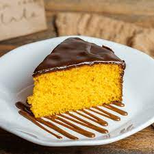
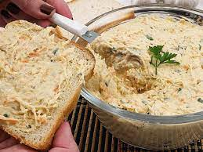

Bolo de Cenoura
Ingredienes:
- 3 cenouras médias (250g)
- 4 ovos
- meia xícara (chá) de óleo
- 2 e meia xícaras (chá) de farinha de trigo
- 2 xícaras (chá) de açúcar
- 1 colher (sopa) de fermento em pó
Cobertura:
- 1 caixa de leite condensado
- 1 caixa de creme de leite
- 1 colher (sopa) de manteiga
- 1 barra de chocolate meio amargo
Modo de preparo:
Massa do Bolo
- Em um liquidificador, bata as cenouras, os ovos e o óleo.
- Despeje a mistura em um recipiente e misture o açúcar e a farinha de trigo peneirada com o fermento.
- Coloque em uma fôrma retangular (20 x 30 cm) untada, e leve ao forno médio (180°C), preaquecido, por 40 minutos.
- Enquanto isso, prepare a cobertura de brigadeiro.
Cobretura
- Em uma panela despeje o leite condensado, o chocolate, a manteiga e o creme de leite e leve em fogo baixo.
- Mexa sempre até começar a desprender da panela
- Despeje ainda quente sobre o bolo
Bolinho de chuva
Ingredientes
- 2 ovos
- 1 xícara (chá) de leite
- 1 colher (sopa) de fermento
- 1 xícara de açucar
- 2 e 1/2 de farinha de trigo
- 3 colheres (sopa) de açucar para polvilhar
- 1 litro de óleo para fritar
Modo de preparo:
- Misture todos os ingredientes até obter uma massa cremosa e homogênea.
- Deixe aquecer uma panela com bastante óleo para que os bolinhos possam boiar.
- Quando o óleo estiver bem quente (180º C), com uma colher, comece a colocar pequenas quantidades de massa, e frite até que dourem por inteiro.
- Coloque os bolinhos sobre papel absorvente e depois passe-os no açúcar.
Patê de Frango
Ingredientes
- 500g de frango desfiado cozido
- 250g de milho verde
- 300g de maionese
- 2 cenouras médias raladas
- sal a gosto
- cheiro verde
Modo de preparo
- Em um vasilha colocar o frango desfiado.
- Misture o frango com a maionese até formar um creme.
- Logo após, adicionar a cenoura ralada, o milho verde e o cheiro-verde.
- Misture até juntar todos os ingredientes.
- Está pronto.
- Essa receita pode ser servida com bolachas de sal, pão branco, tapiocas ou até mesmo como petisco.